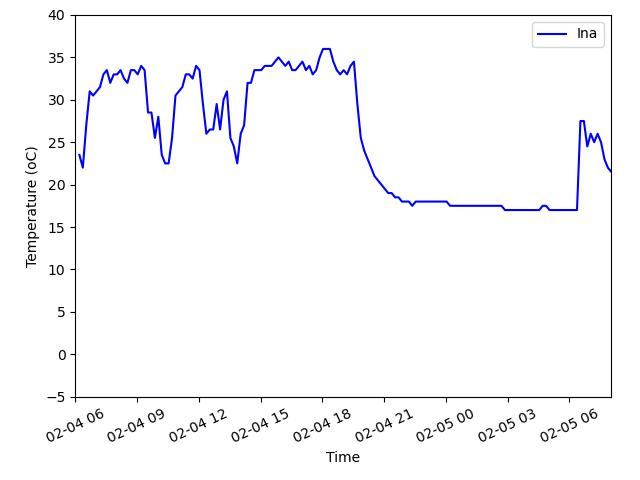

Polarsykepleierens Søken: En Dag et Troll
På kanten av den frosne verden, der himmelen møter den endeløse isen, legger en skikkelse ut på en edel søken. Ikke en kriger, ikke en trollmann, men en polarsykepleier – en vokter av helse og orden i det kontrollerte kaoset på isens yttergrense.
Morgenlyset strakte seg over Troll forskningsstasjon, og på sykestua startet dagen. Administrative oppgaver avslørte et presserende behov – førstehjelpsutstyr var modent for utskifting. Bandasjer gulnet, antiseptiske midler var utløpt, og utdatert utstyr bar spor av tidligere ekspedisjoner. Beslutningen ble tatt: ut med det gamle, inn med det nye.
Søket begynte i lagerrom og kontainere. Krykker eldgamle som isen, sårbandasjer fra en annen tid, kirurgiske instrumenter bedre egnet for et museum enn for en moderne legevakt. Polarsykepleieren og stasjonens lege tok fatt på oppgaven.
Før middagstid, med en solid vogn, inspiserte de hvert hjørne av stasjonen. Laboratorier, mekaniske huler og skjulte rom – intet førstehjelpsutstyr ble latt ukontrollert. Øyeskyllestasjoner ble etterfylt, AED-er undersøkt, forsyninger hentet.
Dagen bød også på et uventet høydepunkt – et besøk til TONE-observatoriet, hvor skarpe hoder løste himmelens mysterier. Blant teleskoper og data undret de seg over alt som finnes innenfor disse veggene – en påminnelse om den grenseløse nysgjerrigheten som driver menneskelig utforskertrang, selv i de tøffeste miljøer.
Lunsj kl. 11, kaffe kl. 15 – ritualer like hellige som selve isen. Ved dagens slutt var utstyret (nesten) fornyet.
Mens vinden hvisket over de frosne slettene, snudde polarsykepleieren seg og gikk inn igjen – klar for hva morgendagen måtte bringe.

At the edge of the frozen world, where the sky meets the endless ice, a lone figure embarks on a noble quest. Not a warrior nor a sorcerer, but a polarsykepleier - guardian of health and order amidst the controlled chaos of Antarctic life.
The morning light stretched over Troll research station, and in the infirmary, the day’s mission began. Administrative duties revealed a pressing need - first aid supplies had grown weary with age. Bandages yellowed, antiseptics expired, and outdated equipment whispered of past expeditions. The decision was made - out with the old, in with the new.
Through storage rooms and supply caches, the search commenced. Splints as ancient as the ice, wound dressings from another era, and surgical tools better suited for a museum than modern emergency care. The polarsykepleier and the station’s doctor set forth on their next task.
By midday, armed with a sturdy trolley, they inspected every corner of the station. Laboratories, mechanical dens, and hidden survival caches - no first-aid kit was left unchecked. Eyewash stations were replenished, AEDs examined, and supplies restored.
The day also brought an unexpected highlight - an intriguing visit to the TONE observatory, where the brightest minds unraveled the mysteries of the sky. Among telescopes and data streams, they marveled at the depth of knowledge contained within those walls, a reminder of the boundless curiosity that drives human exploration even in the harshest of environments.
Lunch at 11, coffee at 15 - rituals as sacred as the ice itself. By day‚Äôs end, the inventory stood (almost) renewed. As the wind whispered across the frozen plains, the polarsykepleier turned, stepping back inside - ready for whatever tales tomorrow would bring üíÅ‚Äç‚ôÄÔ∏è